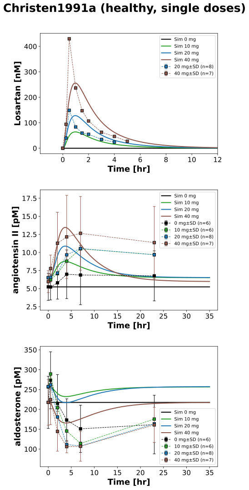
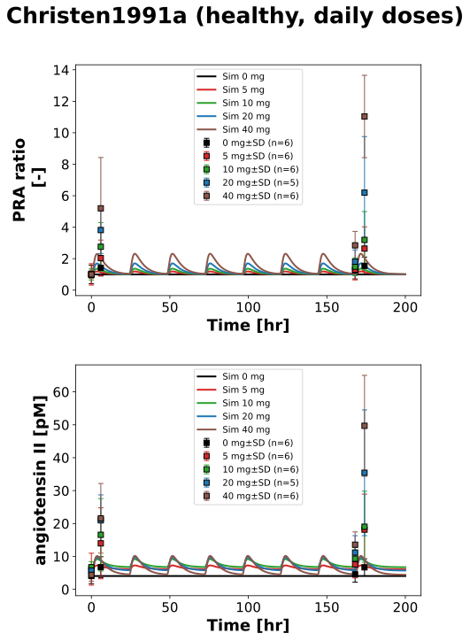

Overview
Models
| model | source |
|---|---|
| model | losartan_body_flat.xml |
Datasets
Figures (2)




Code
"""Simulation experiment of the study Christen1991a."""
from typing import ClassVar, override
from pkpdsim.metadata import (
ApplicationForm,
Coadministration,
DataType,
Dosing,
Fasting,
Health,
PKPDData,
PKPDMappingMetaData,
Route,
Tissue,
)
from sbmlsim import Q
from sbmlsim.data import DataSet
from sbmlsim.fit import FitData, FitMapping
from sbmlsim.plot import Axis, Figure
from sbmlsim.simulation import Simulation
from pkdb_models.models.losartan import MODEL
from pkdb_models.models.losartan.experiments.base_experiment import (
LosartanSimulationExperiment,
)
class Christen1991a(LosartanSimulationExperiment):
"""Simulation experiment of Christen1991a.
Oral losartan potassium (DuP 753, powder dissolved in water) in fasted,
supine healthy male subjects with a free sodium intake: single doses of 10,
20 and 40 mg or placebo (study 1, 8 subjects, 73 kg; the arms of 2.5 and
5 mg with two subjects are not curated), and 5, 10, 20 and 40 mg or placebo
once daily for 8 days (study 2, 29 subjects, 70 kg). Plasma losartan of
the single doses of 20 and 40 mg (Fig7), angiotensin II and aldosterone of
the single doses (Fig5), the plasma renin activity (PRA) and angiotensin
II before and 6 hr after the doses of day 1 and day 8 (Fig6). Mean and SEM.
The PRA (ng angiotensin I/ml/hr) is the renin activity, not the renin
concentration: it is mapped relative to the value of its arm before the
first dose (`ren_ratio`); the renin rows of the curation (PRA x 7.6) are
not used. The systolic pressure responses to the angiotensin I and II test
doses (Fig1, Fig4, in % of the response before the drug) are a measure of
the AT1 blockade, not of the resting blood pressure, which did not change
(Tab1, Tab2); the model has no observable for them, they are not used.
"""
#: the single doses of study 1 [mg losartan potassium]
interventions_single: ClassVar[dict[str, int]] = {
"placebo": 0,
"LOS10": 10,
"LOS20": 20,
"LOS40": 40,
}
#: the daily doses of study 2 [mg losartan potassium]
interventions_multi: ClassVar[dict[str, int]] = {
"placeboM": 0,
"LOS5M": 5,
"LOS10M": 10,
"LOS20M": 20,
"LOS40M": 40,
}
#: the baselines of the arms of study 1 before the dose (Fig5):
#: angiotensin II [fmol/ml] and aldosterone [pg/ml]
baselines_single: ClassVar[dict[str, dict[str, float]]] = {
"placebo": {"ang2": 5.24, "ald": 78.4},
"LOS10": {"ang2": 6.50, "ald": 92.5},
"LOS20": {"ang2": 6.52, "ald": 92.8},
"LOS40": {"ang2": 5.97, "ald": 78.4},
}
#: the baselines of the arms of study 2 before the first dose (Fig6):
#: angiotensin II [fmol/ml]
baselines_multi: ClassVar[dict[str, dict[str, float]]] = {
"placeboM": {"ang2": 4.06},
"LOS5M": {"ang2": 6.13},
"LOS10M": {"ang2": 6.73},
"LOS20M": {"ang2": 5.70},
"LOS40M": {"ang2": 4.40},
}
#: the observables of study 1 and study 2 by the name of the data
info_single: ClassVar[dict[str, str]] = {
"los": "[Cveplasma_los]",
"ang2": "[ang2]",
"aldosterone": "[ald]",
}
info_multi: ClassVar[dict[str, str]] = {
"pra": "ren_ratio",
"ang2": "[ang2]",
}
#: the single doses with plasma losartan (Fig7, upper panel)
pk_interventions: ClassVar[list[str]] = ["LOS20", "LOS40"]
#: limit of quantification of losartan (HPLC-UV), the means below it
#: contain values set to zero
loq_los: ClassVar[float] = 8.0 # [ng/ml]
colors: ClassVar[dict[int, str]] = {
0: "black",
5: "tab:red",
10: "tab:green",
20: "tab:blue",
40: "tab:brown",
}
@override
def datasets(self) -> dict[str, DataSet]:
dsets = {}
# single doses: angiotensin II [fmol/ml = pM] and aldosterone
df = self.load_dataframe("Fig5")
for label, df_label in df.groupby("label"):
label = str(label)
dset = DataSet.from_df(df_label, self.ureg)
if label.endswith("_aldosterone"):
dset.unit_conversion("mean", 1 / self.Mr.ald)
dsets[label] = dset
# multiple doses: angiotensin II and the PRA relative to the value of
# the arm before the first dose
df = self.load_dataframe("Fig6")
for label, df_label in df.groupby("label"):
label = str(label)
if label.endswith("_renin"):
# PRA x 7.6, not a measurement
continue
if label.endswith("_pra"):
df_ratio = df_label.copy()
baseline = df_ratio.loc[df_ratio.time == 0, "mean"].to_numpy()[0]
for key in ["mean", "sd", "se"]:
df_ratio[key] = df_ratio[key] / baseline
df_ratio["unit"] = "dimensionless"
dsets[label] = DataSet.from_df(df_ratio, self.ureg)
else:
dsets[label] = DataSet.from_df(df_label, self.ureg)
# single doses: plasma losartan (as DuP 753, the potassium salt) of the
# upper panel of Fig7, without the means below the limit of
# quantification after the dose
df = self.load_dataframe("Fig7")
for intervention in self.pk_interventions:
df_label = df[df.label == intervention]
df_label = df_label[
(df_label.time == 0) | (df_label["mean"] >= self.loq_los)
]
dset = DataSet.from_df(df_label, self.ureg)
dset.unit_conversion("mean", 1 / self.Mr.losp)
dsets[f"{intervention}_los"] = dset
return dsets
@override
def simulations(self) -> dict[str, Simulation]:
tcsims = {}
# single dose
for intervention, dose in self.interventions_single.items():
baseline = self.baselines_single[intervention]
ang2 = Q(baseline["ang2"], "fmole/ml")
ald = Q(baseline["ald"], "pg/ml") / self.Mr.ald
tcsims[f"po_{intervention}"] = Simulation(
time_unit="min",
end=35 * 60,
preinit_changes={
**self.default_changes(),
"BW": Q(73, "kg"),
"PODOSE_los": self.losartan_dose(Q(dose, "mg")),
"ang2_ref": ang2,
"[ang2]": ang2,
"ald_ref": ald,
"[ald]": ald,
},
)
# multiple dose: a dose every 24 hr for 8 days
for intervention, dose in self.interventions_multi.items():
ang2 = Q(self.baselines_multi[intervention]["ang2"], "fmole/ml")
tcsims[f"po_{intervention}"] = Simulation(
time_unit="hr",
end=7 * 24 + 32,
preinit_changes={
**self.default_changes(),
"BW": Q(70, "kg"),
"PODOSE_los": self.losartan_dose(Q(dose, "mg")),
"ang2_ref": ang2,
"[ang2]": ang2,
},
changes=[
self.add_doses(
[24 * k for k in range(1, 8)],
{"PODOSE_los": self.losartan_dose(Q(dose, "mg"))},
),
],
)
return tcsims
@override
def fit_mappings(self) -> dict[str, FitMapping]:
mappings = {}
for name, sid in self.info_single.items():
for intervention in self.interventions_single:
if name == "los" and intervention not in self.pk_interventions:
continue
mappings[f"fm_po_{name}_{intervention}"] = self._mapping(
dataset=f"{intervention}_{name}",
task=f"task_po_{intervention}",
sid=sid,
# the SEM only for placebo and 40 mg: all curves unweighted
yid_sd=None,
dosing=Dosing.SINGLE,
)
for name, sid in self.info_multi.items():
for intervention in self.interventions_multi:
mappings[f"fm_po_{name}_{intervention}"] = self._mapping(
dataset=f"{intervention}_{name}",
task=f"task_po_{intervention}",
sid=sid,
yid_sd="mean_sd",
dosing=Dosing.MULTIPLE,
)
return mappings
def _mapping(
self, dataset: str, task: str, sid: str, yid_sd: str | None, dosing: Dosing
) -> FitMapping:
"""Get the fit mapping of a dataset to an observable of a task.
Args:
dataset: key of the dataset.
task: key of the task.
sid: the observable.
yid_sd: the column of the standard deviation, None for no weights.
dosing: single or multiple doses.
Returns:
The fit mapping.
"""
return FitMapping(
self,
reference=FitData(
self,
dataset=dataset,
xid="time",
yid="mean",
yid_sd=yid_sd,
count="count",
),
observable=FitData(self, task=task, xid="time", yid=sid),
metadata=PKPDMappingMetaData(
tissue=Tissue.PLASMA,
route=Route.PO,
application_form=ApplicationForm.SOLUTION,
dosing=dosing,
health=Health.HEALTHY,
fasting=Fasting.FASTED,
coadministration=Coadministration.NONE,
data=PKPDData.PK if sid == "[Cveplasma_los]" else PKPDData.PD,
data_type=DataType.MEAN,
),
)
@override
def figures(self) -> dict[str, Figure]:
return {
**self.fig5_fig7(),
**self.fig6(),
}
def fig5_fig7(self) -> dict[str, Figure]:
"""Figures 5 and 7: single doses, plasma losartan and the RAAS."""
fig = Figure(
experiment=self,
sid="Fig5_Fig7",
num_rows=3,
name=f"{self.__class__.__name__} (healthy, single doses)",
)
plots = fig.create_plots(
xaxis=Axis(self.label_time, unit=self.unit_time), legend=True
)
plots[0].set_yaxis(self.label_los, unit=self.unit_los)
plots[1].set_yaxis(self.labels["[ang2]"], unit=self.units["[ang2]"])
plots[2].set_yaxis(self.labels["[ald]"], unit=self.units["[ald]"])
xaxis = plots[0].xaxis
if xaxis is not None: # set by `create_plots`
xaxis.max = 12
for k, (name, sid) in enumerate(self.info_single.items()):
for intervention, dose in self.interventions_single.items():
plots[k].add_data(
task=f"task_po_{intervention}",
xid="time",
yid=sid,
label=f"Sim {dose} mg",
color=self.colors[dose],
)
if name == "los" and intervention not in self.pk_interventions:
continue
plots[k].add_data(
dataset=f"{intervention}_{name}",
xid="time",
yid="mean",
yid_sd="mean_sd",
count="count",
label=f"{dose} mg",
color=self.colors[dose],
)
return self.figures_by_sid(fig)
def fig6(self) -> dict[str, Figure]:
"""Figure 6: daily doses for 8 days, PRA and angiotensin II."""
fig = Figure(
experiment=self,
sid="Fig6",
num_rows=2,
name=f"{self.__class__.__name__} (healthy, daily doses)",
)
plots = fig.create_plots(
xaxis=Axis(self.label_time, unit=self.unit_time), legend=True
)
plots[0].set_yaxis("PRA ratio\n", unit=self.units["ren_ratio"])
plots[1].set_yaxis(self.labels["[ang2]"], unit=self.units["[ang2]"])
for k, (name, sid) in enumerate(self.info_multi.items()):
for intervention, dose in self.interventions_multi.items():
plots[k].add_data(
task=f"task_po_{intervention}",
xid="time",
yid=sid,
label=f"Sim {dose} mg",
color=self.colors[dose],
)
plots[k].add_data(
dataset=f"{intervention}_{name}",
xid="time",
yid="mean",
yid_sd="mean_sd",
count="count",
label=f"{dose} mg",
color=self.colors[dose],
linestyle="",
)
return self.figures_by_sid(fig)
if __name__ == "__main__":
MODEL.run_experiments(Christen1991a, output_dir=Christen1991a.__name__)